Sales presentation system
A 62-slide company deck and a 19-slide proposal template, rebuilt in Figma Slides on one shared grid.
Context
Sales used a long PowerPoint deck that had grown slide by slide. I rebuilt it in Figma Slides against one reference style: 1920×1080, 80 px margins, three 520 px columns, a fixed header (eyebrow, two-colour headline, rule) and a footer with page number.
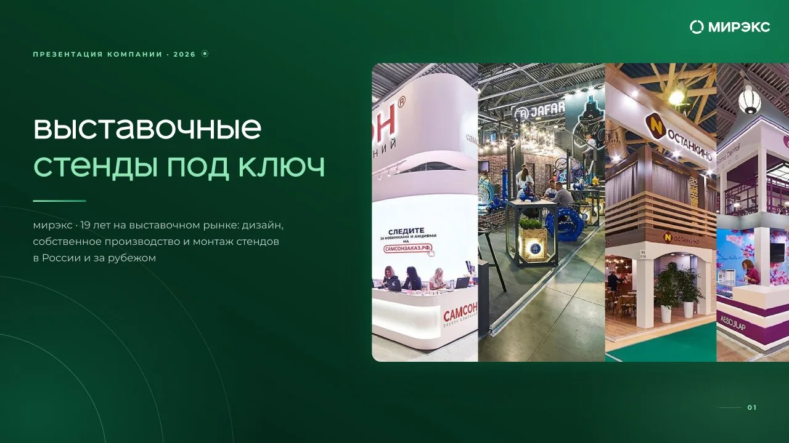
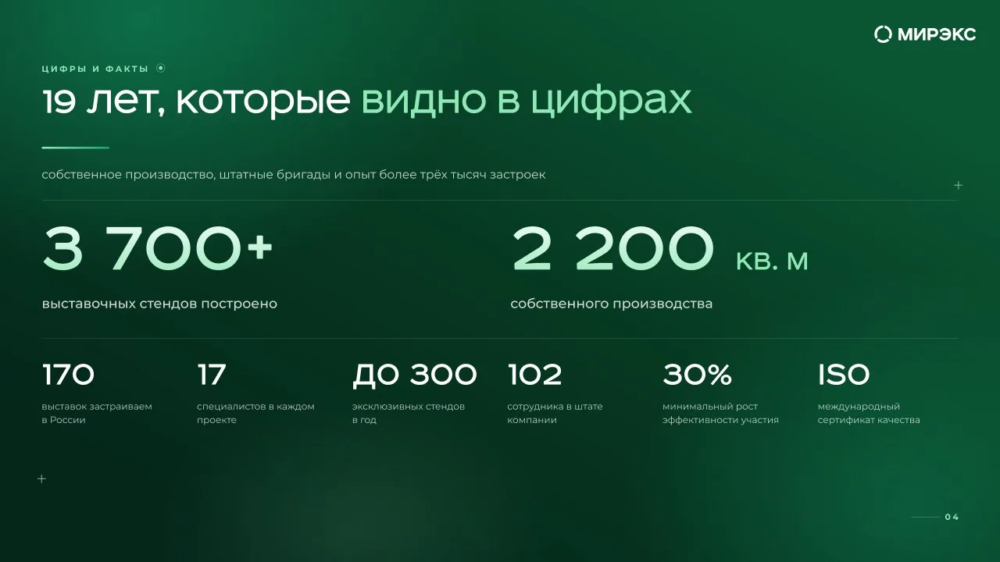
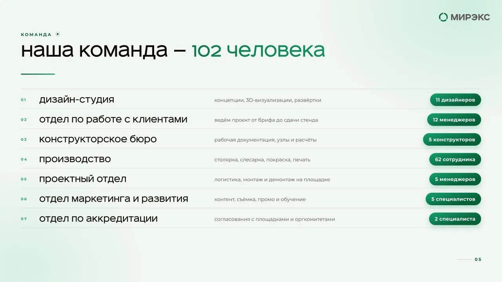
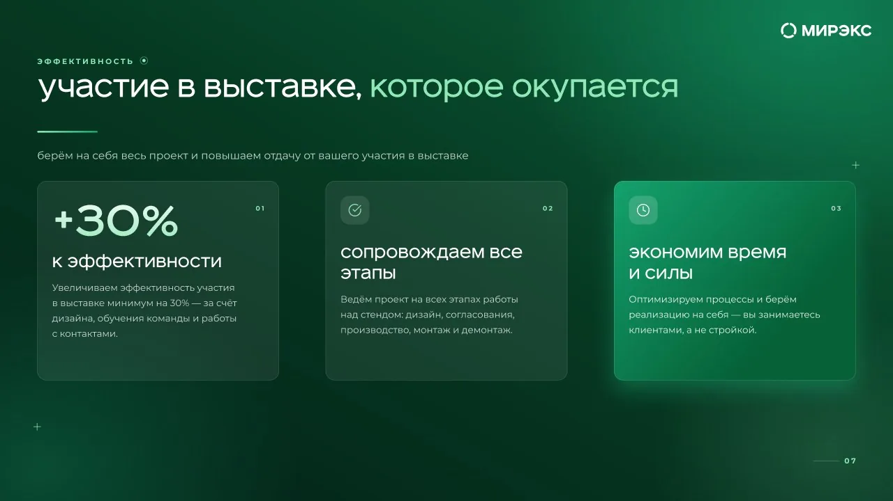
51 case slides that don't look the same
Most of the deck is a portfolio of 51 stands. Four photo layouts — two equal photos, narrow + wide, wide + narrow, one panorama — alternate through the deck, picked per case by how many good photos it had. Section dividers group the stands by size.
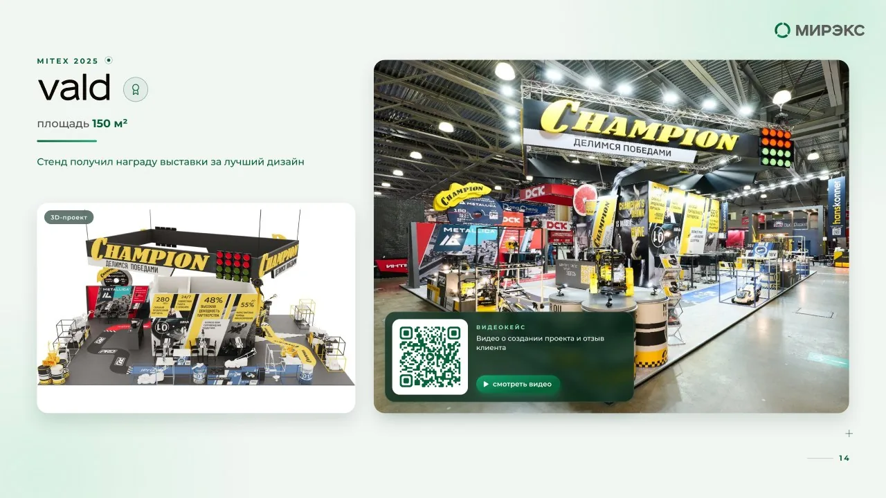
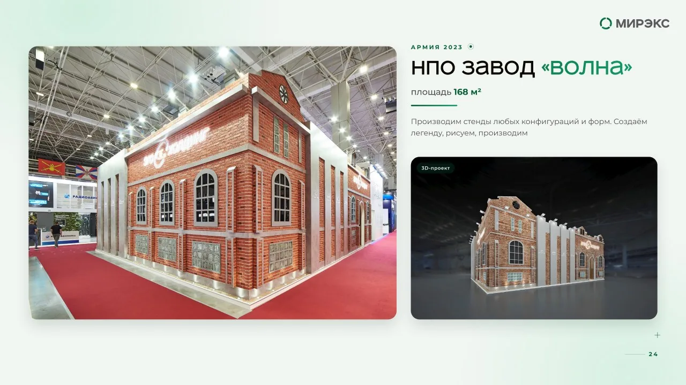
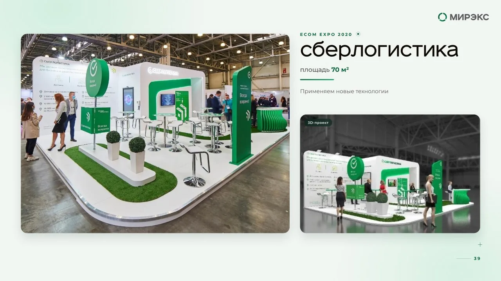
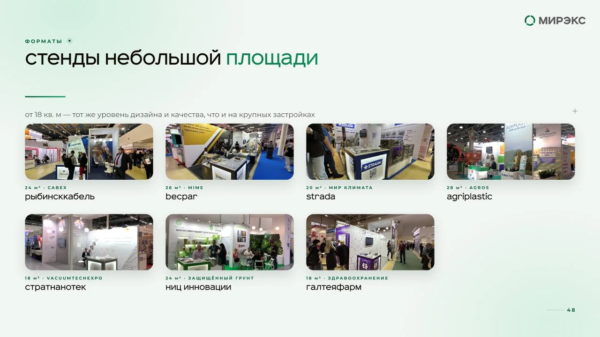
Proposal template
The 19-slide proposal is a template managers fill in themselves. Image placeholders show the exact size they need, the "how we work" chapter uses tab navigation across eight slides, and full-bleed render slides ship with two overlay versions — for light and for dark renders. The template is also delivered as an editable PowerPoint file.
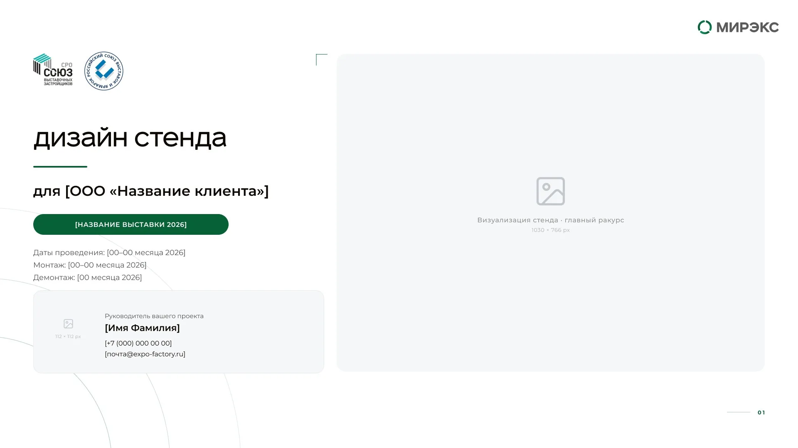
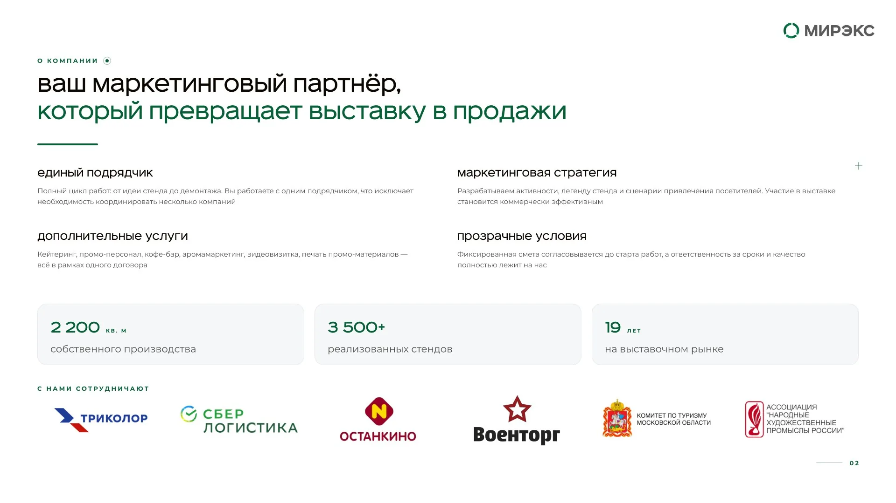
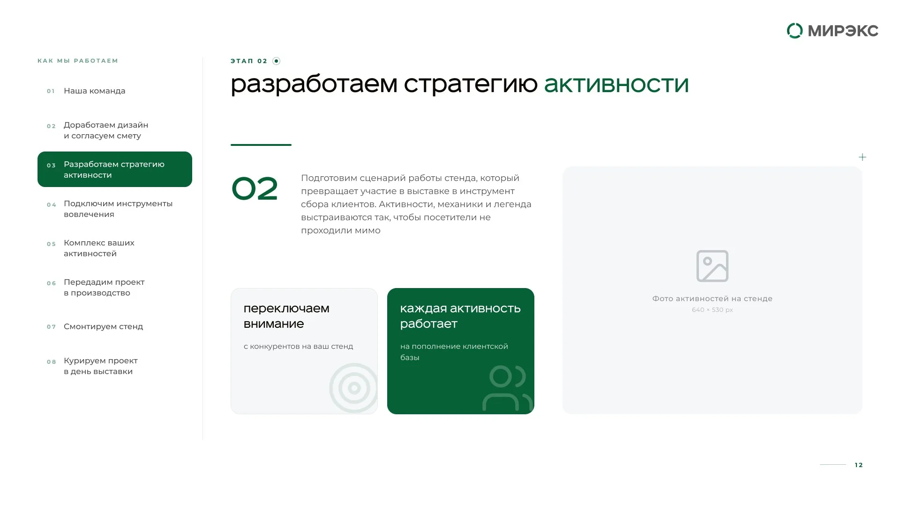
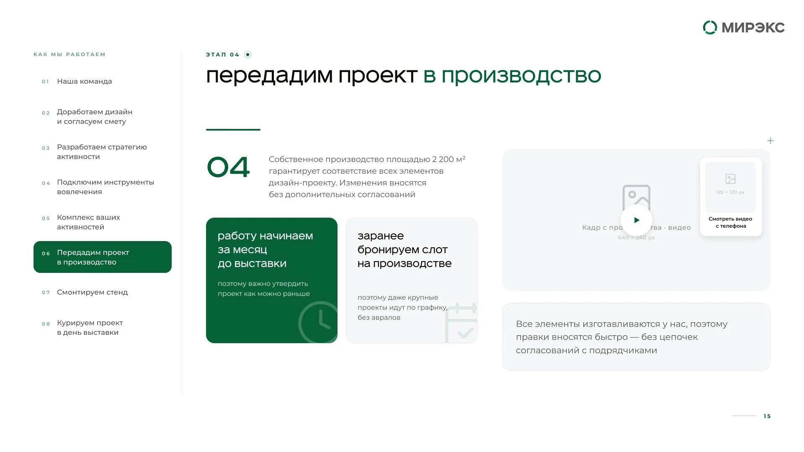